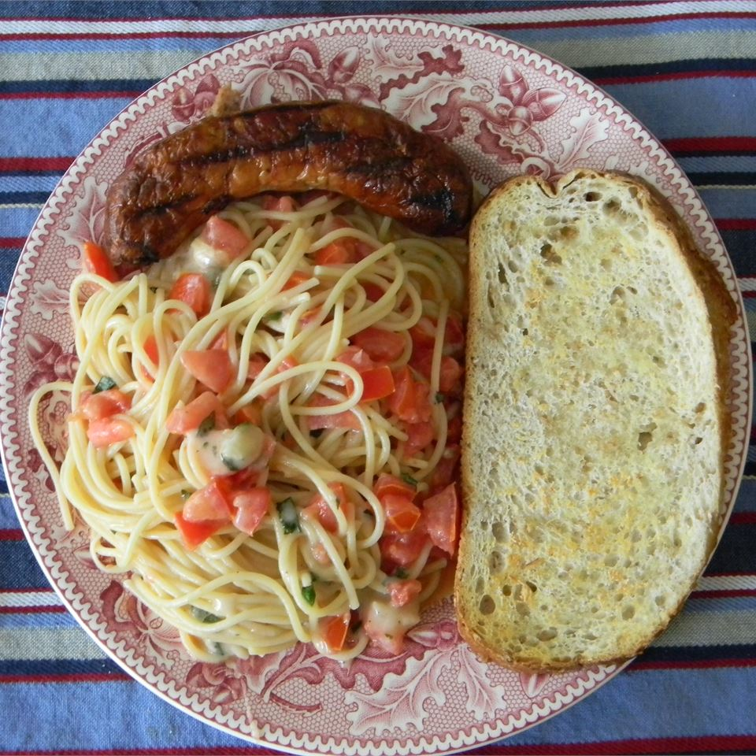

Summer Pasta with Basil, Tomatoes and Cheese
At the peak of summer tomato harvest, it doesn't get any better than this!
Ingredients
- 2 pounds vine ripened tomatoes, seeded and diced
- 3 cloves garlic, minced
- ½ cup chopped fresh basil
- 1 tablespoon chopped fresh mint leaves
- ¾ teaspoon salt
- ½ teaspoon freshly ground black pepper
- ¼ teaspoon crushed red pepper flakes
- ½ cup olive oil
- ¼ cup cream sherry
- 12 ounces spaghetti
- ½ cup freshly grated Asiago cheese
- 2 cups fontina cheese, shredded
Steps
- In a medium bowl, toss together tomatoes, garlic, basil, mint, salt and black pepper, hot pepper flakes, olive oil, and cream sherry. Let stand at room temperature for up to 2 hours, stirring occasionally.
- Cook the pasta In a large pot of boiling salted water until tender, but firm to the bite.
- Drain the pasta, and transfer to a large serving bowl. Drain 1/4 cup of the liquid from the tomato mixture, and toss with the pasta to coat. Add cheese, and toss until it begins to melt. Add the tomato mixture, and toss until mixed.